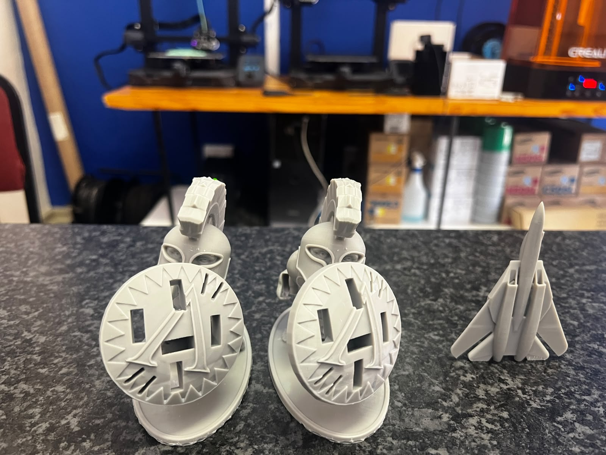
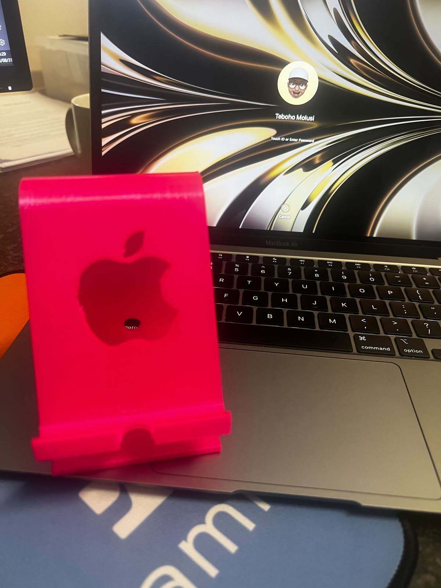
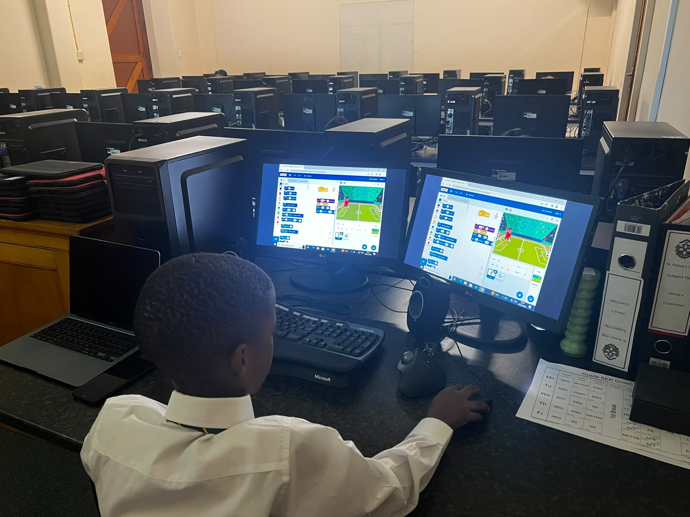
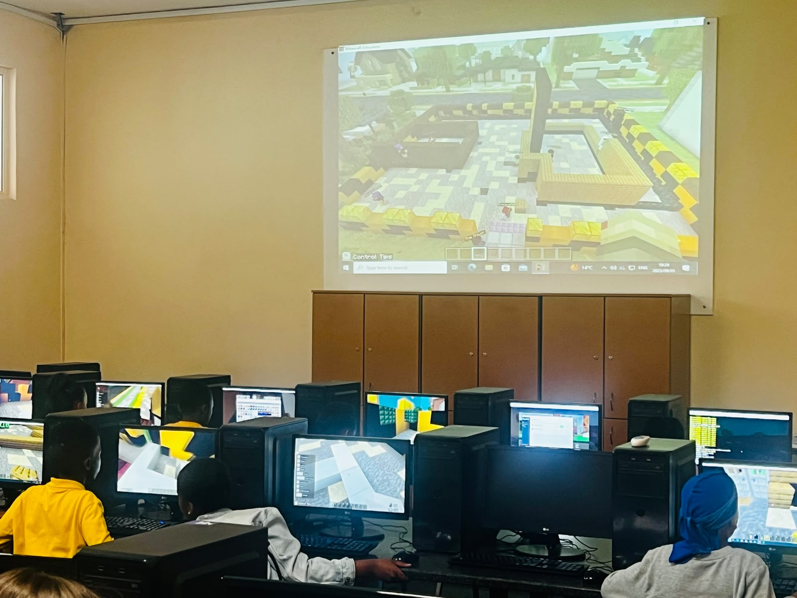
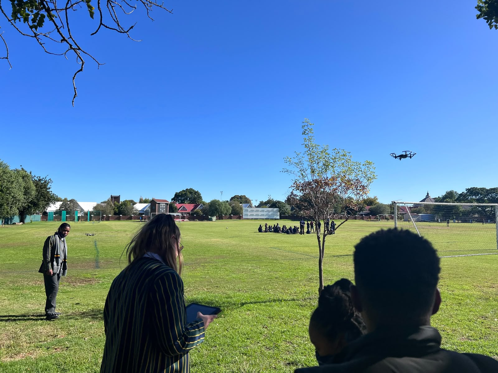
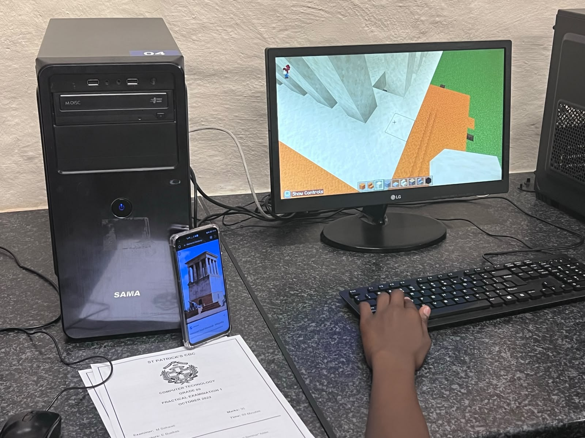
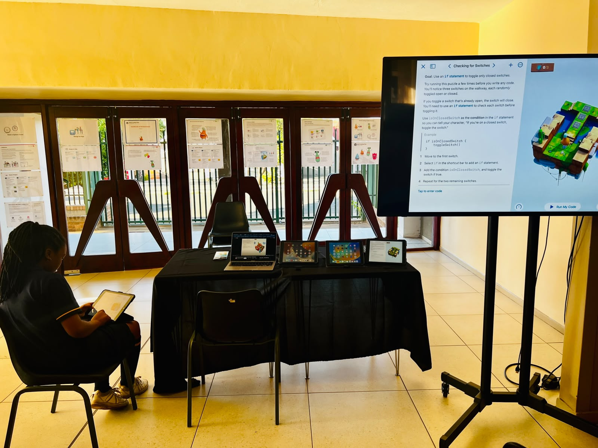
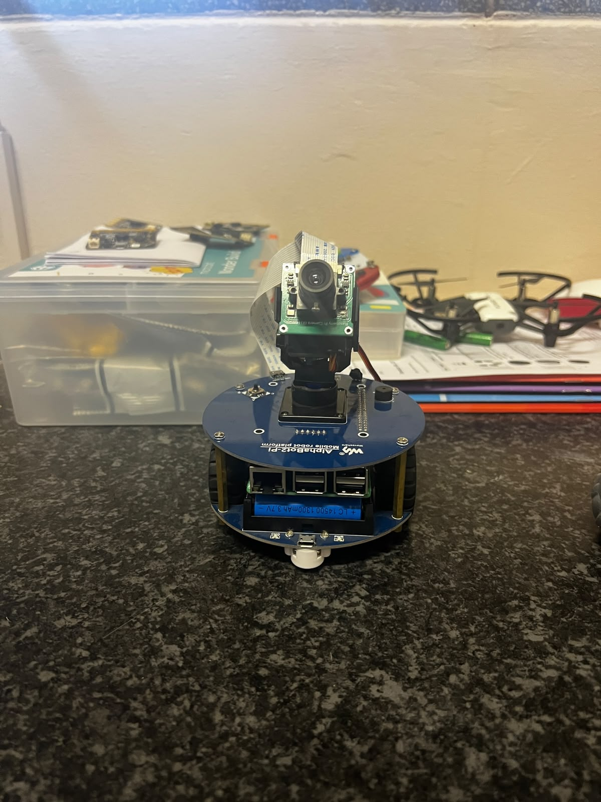
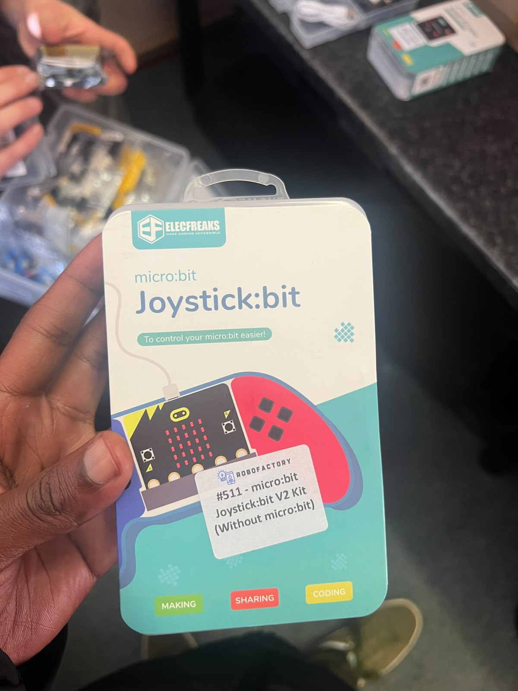
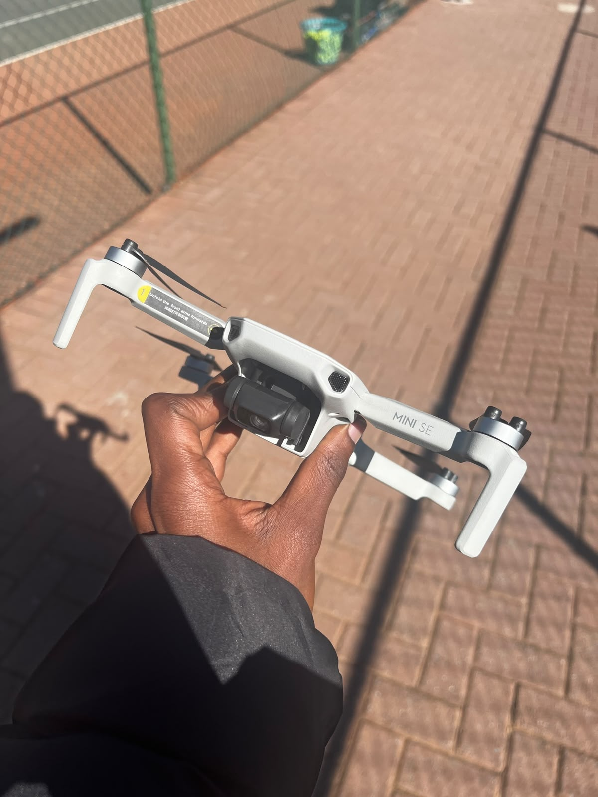

Printed, not rendered
3D printsDesigned in Tinkercad, sliced in UltiMaker Cura, and printed across an Ender-3 V3 SE, an Ender-3 V3 KE, and a Halot Mage 8K resin printer.
The School Cup
St Patrick's CBC needed a trophy for the junior soccer team. Instead of buying one, The sports department ask the IT department to design and print it in-house, a two-part build, black base and gold cup.
The first attempt didn't hold. We had to reworked the design, switched material, and adjusted settings between the FDM and resin printers until it came out clean.
Sports department pays the IT department for the print; that covers the filament for the next one.


Coding & robotics — Foundation Phase
Classroom sessionsCurriculum-linked coding and robotics sessions with the school's youngest learners, run alongside the IT manager and other computer science classes.



Coding & robotics — Senior Phase
Classroom sessionsCurriculum-linked coding and robotics sessions with the senior learners, run alongside the IT & CAT Teachers and other computer science classes.



Robotics & drones
ExtramuralSelf-photographed during extramural sessions — proof of the work, without identifying anyone in it.


